Teknoloji
Teknik etkinlikler, altyapı ve kulübün yazılım işleri.
Boğaziçi Üniversitesi Bilişim Kulübü · 1994
TechSummit'ten hackathonlara, blockchain buluşmalarından Anadolu'daki atölyelere kadar, öğrencilerle sektörü aynı salonda buluşturuyoruz.
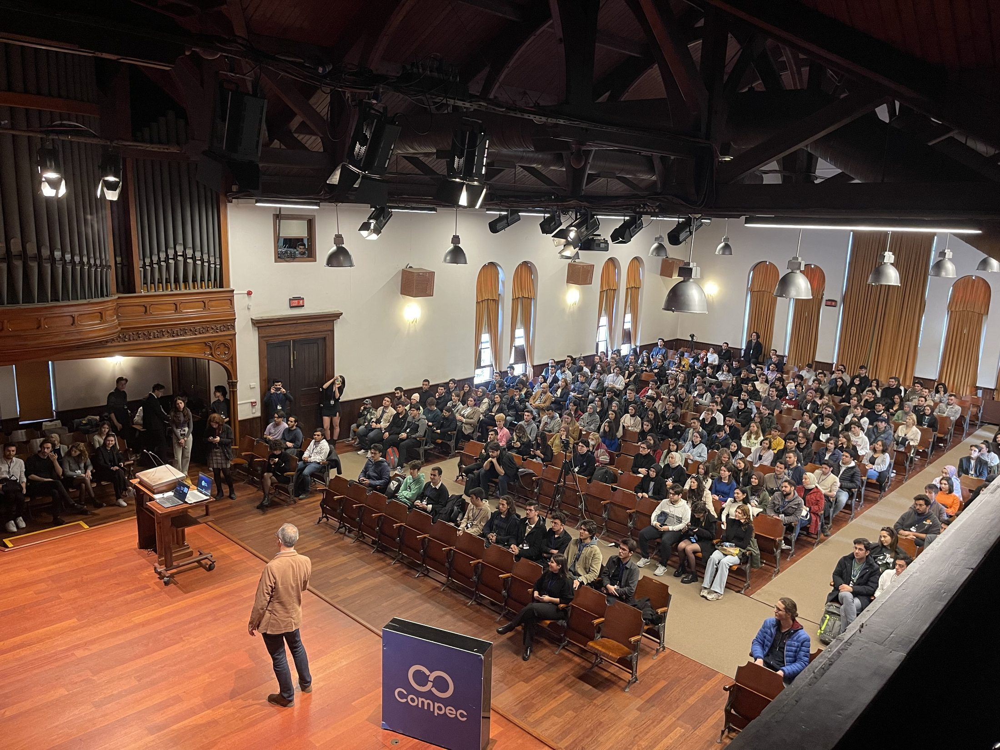
Kulüp
COMPEC 1994'te Bilgisayar Mühendisliği Kulübü olarak kuruldu, bugün Bilişim Kulübü adıyla çalışıyor. Bölüm ayrımı yok: teknolojiye ilgi duyan her Boğaziçili katılabilir.
Teknik etkinlikler, altyapı ve kulübün yazılım işleri.
Kulüp projelerini geliştiren yazılım ekibi.
Tanıtım, iletişim ve topluluk görünürlüğü.
Şirket ilişkileri, iş birlikleri ve sponsorluklar.
Üye deneyimi ve kurullar arası koordinasyon.
Sektörün başarılarının değerlendirildiği ödül programı.
Girişimcilik programları ve startup ekosistemiyle bağ.
Arşiv
Aşağıdaki her kayıt geçmiş etkinliklerimize ait; rakamlar Kommunity üzerinden alınan kayıt sayılarıdır.
Teknoloji dünyasının konuşulduğu, kulübün en büyük ve en eski etkinliği. 2010'dan beri kesintisiz düzenleniyor.
Veri bilimi ve yapay zekâ kampı: NLP, bilgisayarlı görü, IoT, büyük veri ve biyoenformatik. Önce çevrim içi atölyeler, son gün yüz yüze zirve.
Dört gün, dört başlık: dijital girişimcilik, SaaS, blockchain ve veri girişimciliği. İlk kez 2022'de düzenlendi.
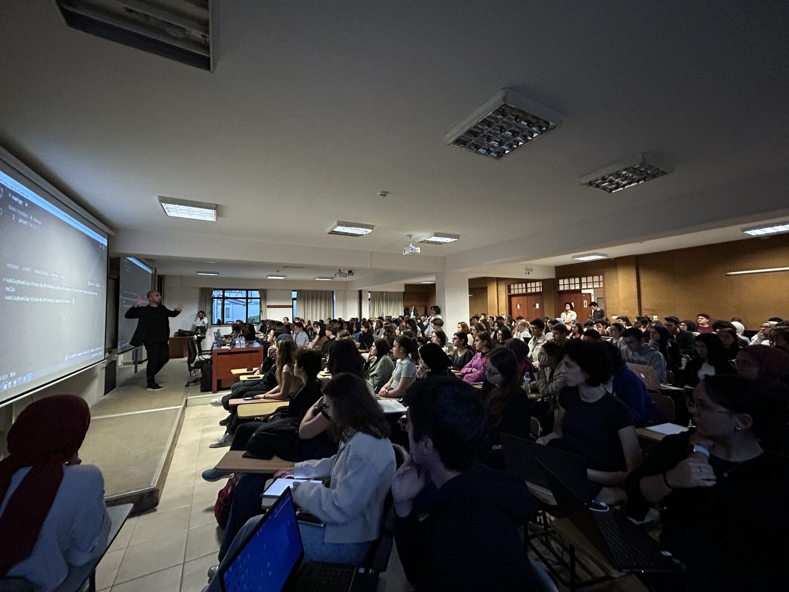
Bilişim sektöründeki başarıların halk oyu, jüri ve bilişim kulüplerinin değerlendirmesiyle belirlendiği ödül gecesi.
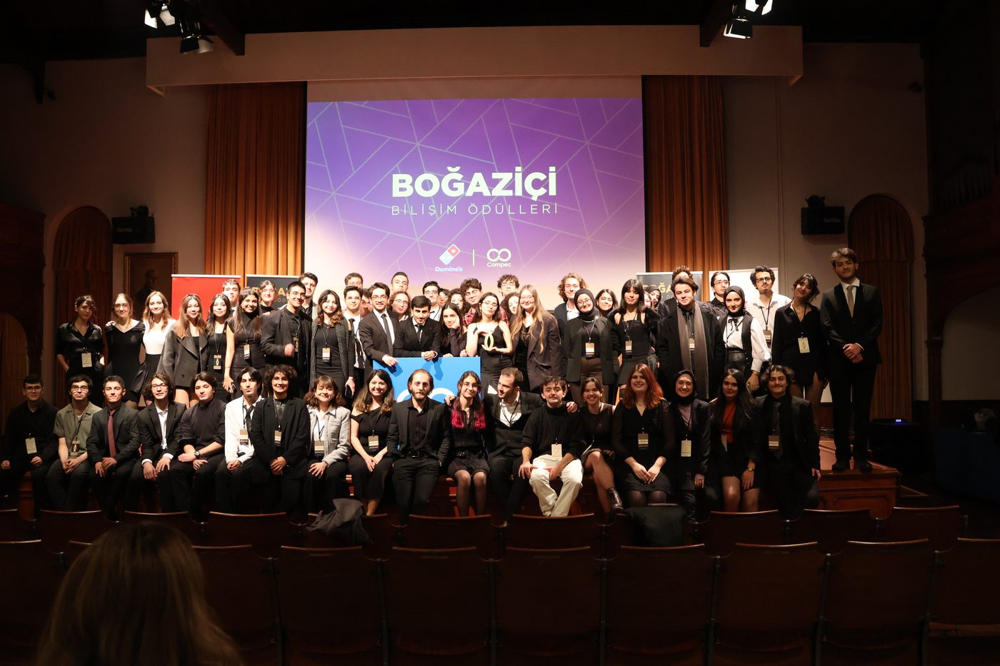
Anadolu'daki ortaokul ve lise öğrencilerini kodlama, yapay zekâ ve robotikle buluşturan sosyal sorumluluk projesi.
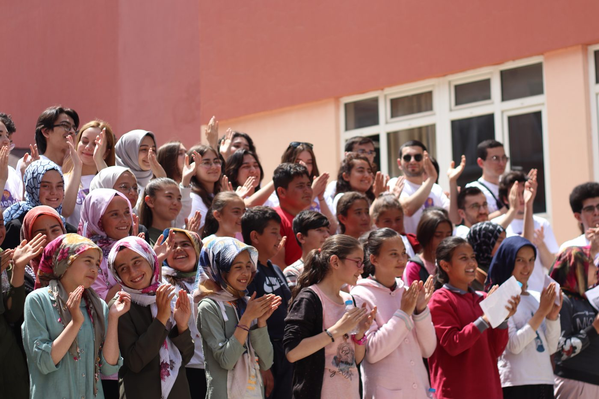
Sektörden mühendis ve yöneticilerin katıldığı söyleşi serisi. Microsoft, Yemeksepeti, Huawei, GittiGidiyor, Pixery, Fibabanka, Masomo ve Vertigo Games ekipleri konuk oldu.
2020 boyunca süren yedi buluşmalık blockchain serisi. İlk buluşma serinin en yüksek katılımını aldı.
Veri odaklı hackathon. 2021 baskısı Invent Analytics iş birliğiyle düzenlendi.
Fikirden oynanabilir prototipe: hafta sonuna sıkıştırılmış oyun geliştirme maratonu.
Yaklaşan etkinliklerin tarihleri duyurulduğunda burada yayımlanacak. Bu arada Instagram hesabımızdan takip edebilirsiniz.
2025–2026 Yönetim Kurulu
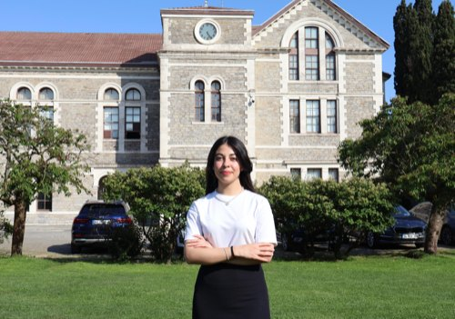
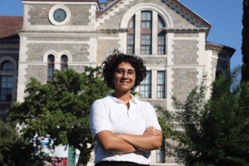
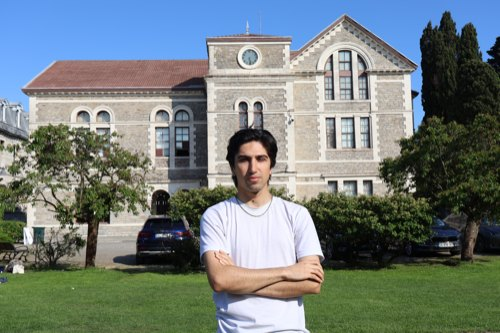
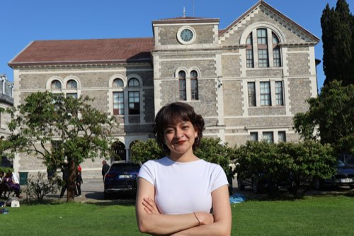
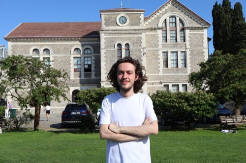
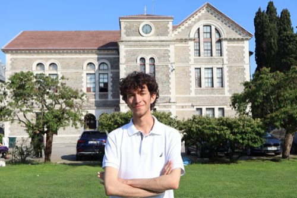
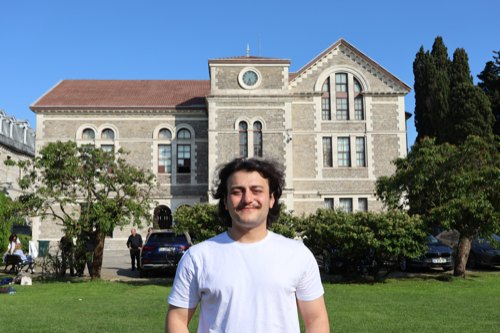
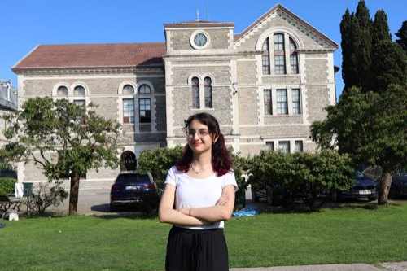
İş birlikleri
Geçmiş etkinliklerimizde bize destek olan şirketlerden bazıları.
Hangi bölümde olduğun fark etmez. Üyelik ücretsiz, etkinliklerimizin büyük bölümü de öyle.
hello@compec.org